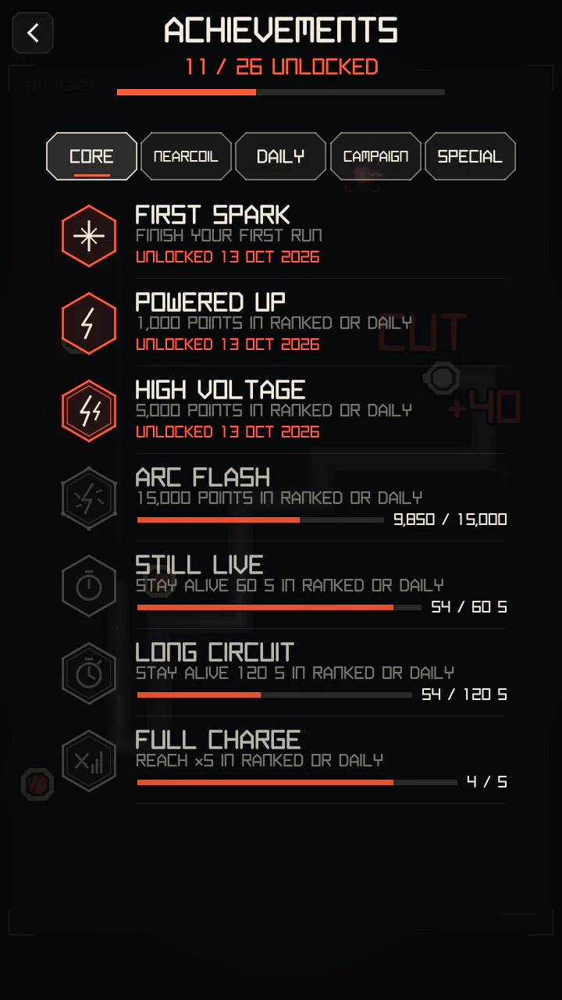
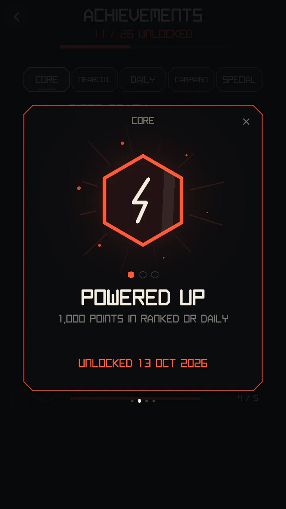
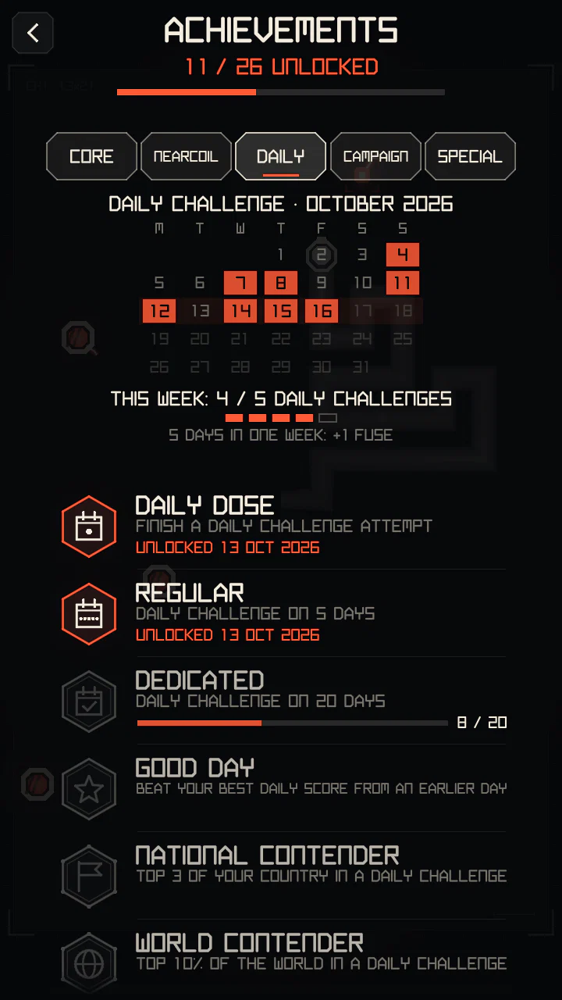
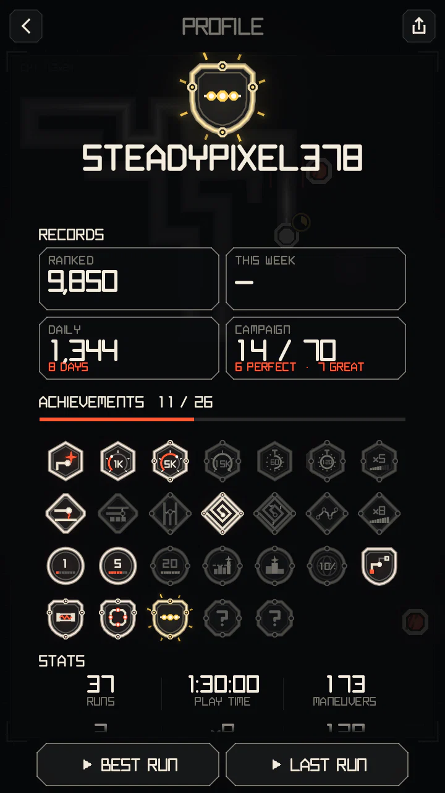

Achievements and profile
Achievements mark what you have done in the game; your profile puts them on one page with your records, and anyone on a leaderboard can open it.
How they work
- 34 achievements in 5 categories: CORE, NEARCOIL, DAILY, CAMPAIGN and SPECIAL. Open them with BADGES on the main menu; swipe left or right to change the tab.
- They are checked when a run ends: a new one appears as a card over the results (three or more as one stack). Nothing pops up during a run.
- Score, survival and multiplier achievements count in RANKED and the DAILY only: Campaign levels pay differently and some start charged.
- Badges have one to three rims (the tier, ● in the tables below); tier three has a gold rim. Two achievements are hidden and show as ??? until you earn them.
- Tap a badge to see it up close: what it asks, the date you earned it, or how far along you are.
- Progress comes from what the game already counts, so an update never takes an achievement away and earlier play counts.




CORE
| Achievement | What it asks | Tier |
|---|---|---|
| FIRST SPARK | FINISH YOUR FIRST RUN | ●○○ |
| POWERED UP | 1 000 POINTS IN RANKED OR DAILY | ●○○ |
| HIGH VOLTAGE | 5 000 POINTS IN RANKED OR DAILY | ●●○ |
| ARC FLASH | 15 000 POINTS IN RANKED OR DAILY | ●●● |
| STILL LIVE | STAY ALIVE 60 S IN RANKED OR DAILY | ●○○ |
| LONG CIRCUIT | STAY ALIVE 120 S IN RANKED OR DAILY | ●●○ |
| FULL CHARGE | REACH ×5 IN RANKED OR DAILY | ●●○ |
| WARMED UP | PLAY ON 7 DAYS, NOT NECESSARILY IN A ROW | ●○○ |
| STEADY CURRENT | PLAY ON 30 DAYS, NOT NECESSARILY IN A ROW | ●●○ |
| ALWAYS ON | PLAY ON 100 DAYS, NOT NECESSARILY IN A ROW | ●●● |
NEARCOIL
Maneuvers are SQUEEZE, THREAD and NEEDLE (see Close calls and maneuvers); a chain is several of them in a row.
| Achievement | What it asks | Tier |
|---|---|---|
| NEAR COIL | YOUR FIRST SQUEEZE, THREAD OR NEEDLE | ●○○ |
| THREAD THE NEEDLE | 5 MANEUVERS IN ONE RUN | ●○○ |
| KNIFE EDGE | 15 MANEUVERS IN ONE RUN | ●●○ |
| TIGHT WIRING | 50 MANEUVERS IN TOTAL | ●●○ |
| COIL MASTER | 250 MANEUVERS IN TOTAL | ●●● |
| CHAIN REACTION | 3 MANEUVERS IN ONE CHAIN | ●●○ |
| NO FEAR | REACH ×8, THE TOP MULTIPLIER | ●●● |
DAILY


The tab opens with this month's calendar: days with a finished Daily Challenge are lit, today is outlined. Under it is the weekly goal: 5 different days of a week pay +1 fuse. The contender achievements need a big enough board: at least 5 players in your country, 20 in the world.
| Achievement | What it asks | Tier |
|---|---|---|
| DAILY DOSE | FINISH A DAILY CHALLENGE ATTEMPT | ●○○ |
| REGULAR | DAILY CHALLENGE ON 5 DAYS | ●○○ |
| DEDICATED | DAILY CHALLENGE ON 20 DAYS | ●●○ |
| CREATURE OF HABIT | DAILY CHALLENGE ON 50 DAYS | ●●● |
| GOOD DAY | BEAT YOUR BEST DAILY SCORE FROM AN EARLIER DAY | ●●○ |
| NATIONAL CONTENDER | TOP 3 OF YOUR COUNTRY IN A DAILY CHALLENGE | ●●● |
| WORLD CONTENDER | TOP 10% OF THE WORLD IN A DAILY CHALLENGE | ●●● |
CAMPAIGN
| Achievement | What it asks | Tier |
|---|---|---|
| CONTACT | CLEAR YOUR FIRST CAMPAIGN LEVEL | ●○○ |
| CLEAN RUN | CLEAR A NEW LEVEL IN CHAPTER 2 OR LATER ON THE FIRST TRY | ●●○ |
| CIRCUIT CLOSED | CLEAR EVERY LEVEL OF A CHAPTER | ●●○ |
| PERFECT CONTACT | EARN PERFECT ON A LEVEL | ●●● |
| GOLD PLATED | EARN PERFECT ON EVERY LEVEL OF A CHAPTER | ●●○ |
| FULL SCHEMATIC | CLEAR ALL 70 CAMPAIGN LEVELS | ●●● |
| MIL-SPEC | GREAT OR PERFECT ON ALL 70 LEVELS | ●●● |
| SUPERCONDUCTOR | PERFECT ON ALL 70 LEVELS | ●●● |
SPECIAL
| Achievement | What it asks | Tier |
|---|---|---|
| SO CLOSE | CRASH WITHIN 3 S OF BEATING YOUR RANKED BEST hidden: shows as ??? until you earn it | ●●○ |
| LAST CHANCE | BEAT YOUR DAILY BEST ON THE LAST ATTEMPT hidden: shows as ??? until you earn it | ●●○ |
PROFILE


- Your own page opens with PROFILE on the main menu. Another player's opens from any leaderboard: tap their row, then PROFILE.
- On it: their best badge as the emblem, name and country, since when they play and their league; the records (RANKED with the place in the world, this week, the DAILY and the days played, the CAMPAIGN with medals); every achievement with the day it was earned; and the play stats.
- The records come from the leaderboards. Achievements, Campaign medals and stats are what the player's game reports: they are shown as they are and never rank anyone.
- The share button makes the page an image to send. REPORT NAME on someone's page reports a name.
- Players taken off the boards have no public page.